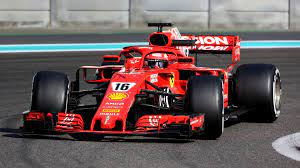

If you no longer go for a gap that exists, you're no longer a racing driver.
List of Sports

F1 Racing
F1 Racing
Formula One is the highest class of international racing for open-wheel single-seater formula racing cars sanctioned by the Fédération Internationale de l'Automobile. ABOUT F1 RACING